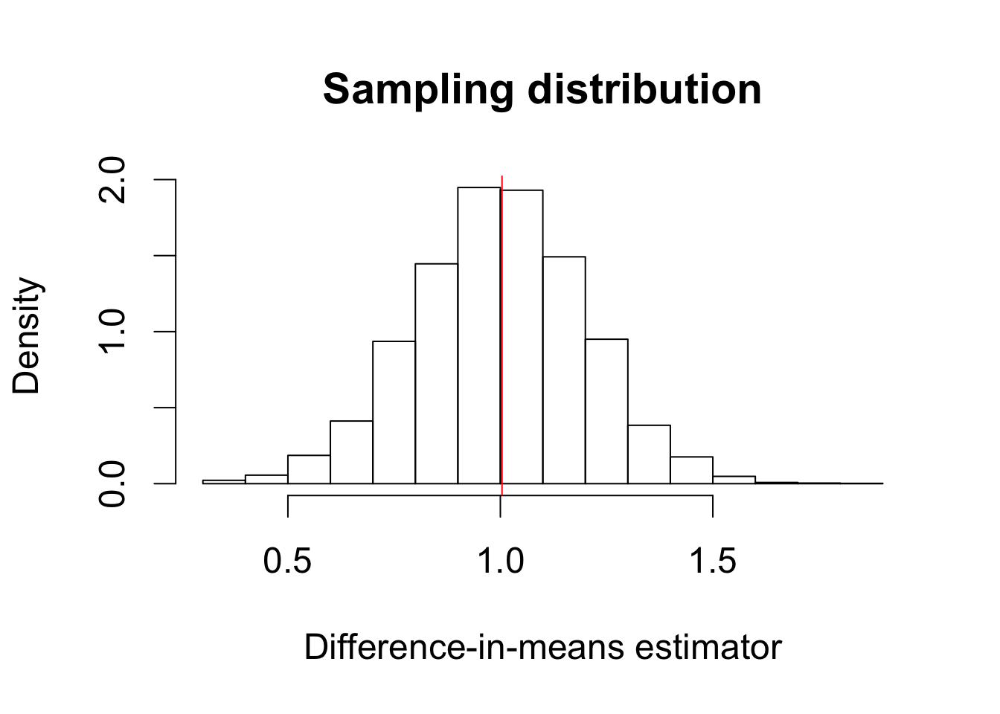
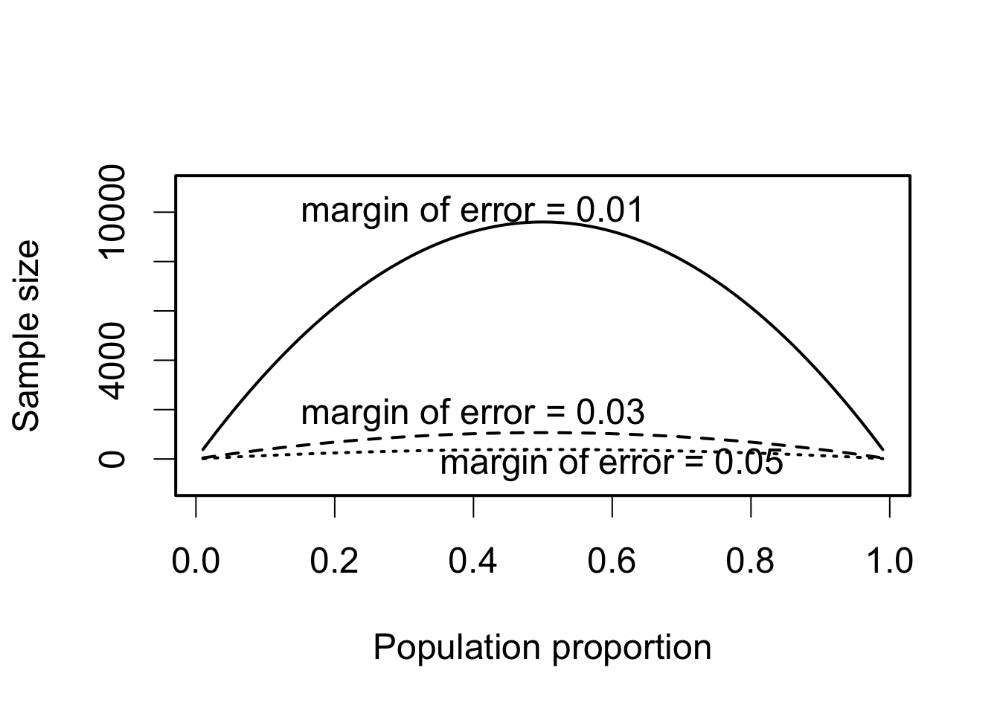
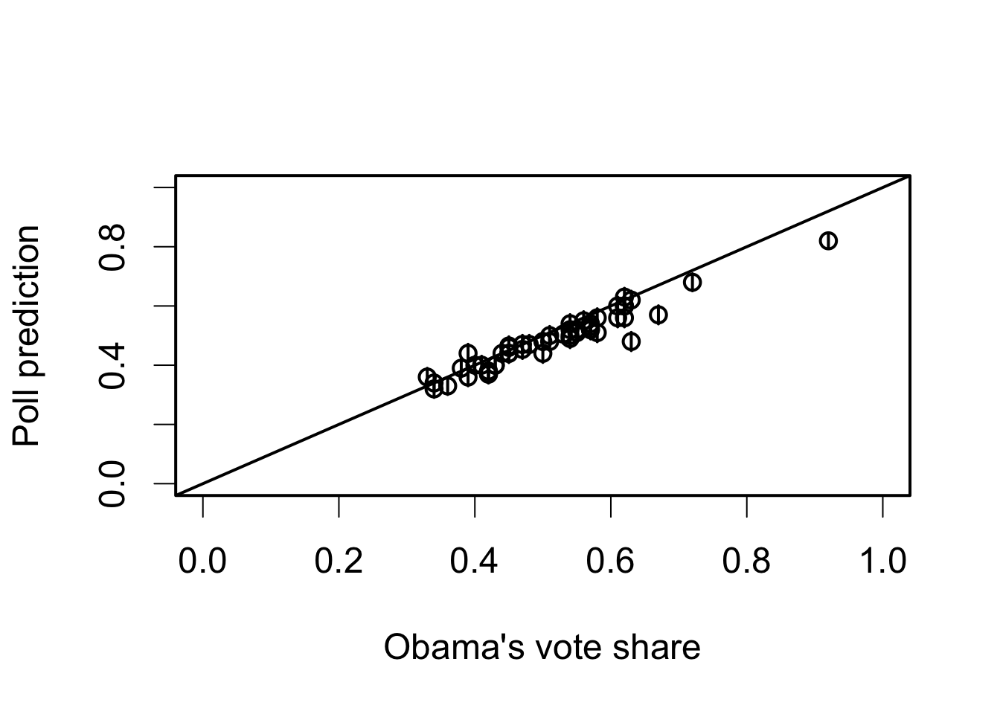
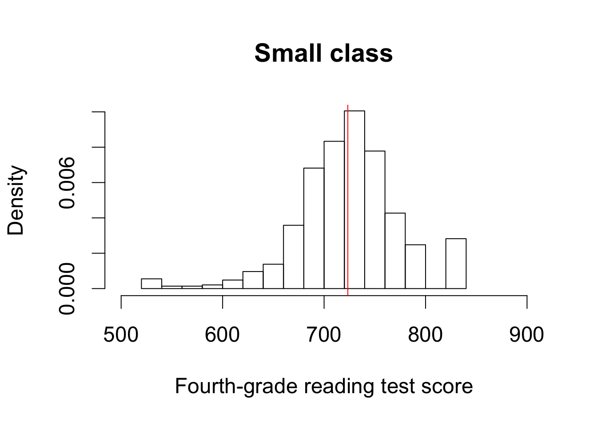
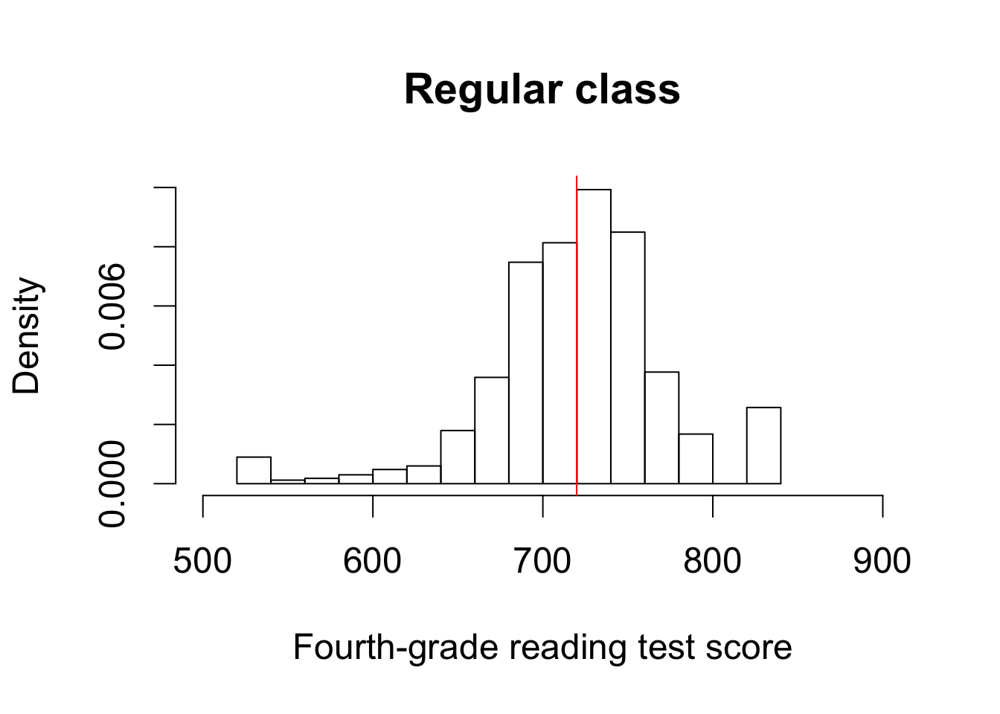
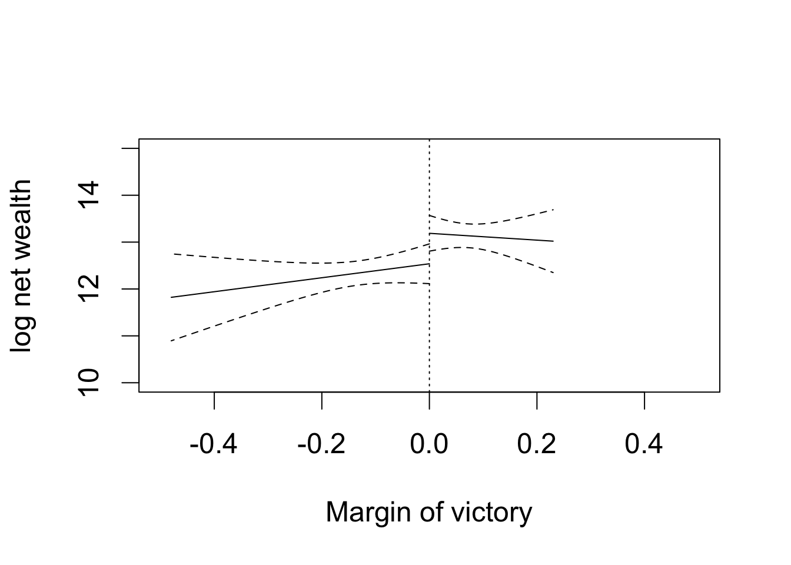

## simulation parameters
n <- 100 # sample size
mu0 <- 0 # mean of Y_i(0)
sd0 <- 1 # standard deviation of Y_i(0)
mu1 <- 1 # mean of Y_i(1)
sd1 <- 1 # standard deviation of Y_i(1)
## generate a sample
Y0 <- rnorm(n, mean = mu0, sd = sd0)
Y1 <- rnorm(n, mean = mu1, sd = sd1)
tau <- Y1 - Y0 # individual treatment effect
## true value of the sample average treatment effect
SATE <- mean(tau)
SATE## [1] 1.003892## repeatedly conduct randomized controlled trials
sims <- 5000 # repeat 5,000 times, we could do more
diff.means <- rep(NA, sims) # container
for (i in 1:sims) {
## randomize the treatment by sampling of a vector of 0's and 1's
treat <- sample(c(rep(1, n / 2), rep(0, n / 2)), size = n, replace = FALSE)
## difference-in-means
diff.means[i] <- mean(Y1[treat == 1]) - mean(Y0[treat == 0])
}
## estimation error for SATE
est.error <- diff.means - SATE
summary(est.error)| Min. | 1st Qu. | Median | Mean | 3rd Qu. | Max. |
|---|---|---|---|---|---|
| -0.5584 | -0.0928 | 0.001674 | 0.001812 | 0.09921 | 0.5316 |
## PATE simulation
PATE <- mu1 - mu0
diff.means <- rep(NA, sims)
for (i in 1:sims) {
## generate a sample for each simulation: this used to be outside of loop
Y0 <- rnorm(n, mean = mu0, sd = sd0)
Y1 <- rnorm(n, mean = mu1, sd = sd1)
treat <- sample(c(rep(1, n / 2), rep(0, n / 2)), size = n, replace = FALSE)
diff.means[i] <- mean(Y1[treat == 1]) - mean(Y0[treat == 0])
}
## estimation error for PATE
est.error <- diff.means - PATE
## unbiased
summary(est.error)| Min. | 1st Qu. | Median | Mean | 3rd Qu. | Max. |
|---|---|---|---|---|---|
| -0.6962 | -0.1318 | -0.0001605 | -0.0009481 | 0.1334 | 0.8196 |
par(cex = 1.5)
hist(diff.means, freq = FALSE, xlab = "Difference-in-means estimator",
main = "Sampling distribution")
abline(v = SATE, col = "red") # true value of SATE
text(0.6, 2.4, "true SATE", col = "red")
sd(diff.means)## [1] 0.2003413sqrt(mean((diff.means - SATE)^2))## [1] 0.2003798## PATE simulation with standard error
sims <- 5000
diff.means <- se <- rep(NA, sims) # container for standard error added
for (i in 1:sims) {
## generate a sample
Y0 <- rnorm(n, mean = mu0, sd = sd0)
Y1 <- rnorm(n, mean = mu1, sd = sd1)
## randomize the treatment by sampling of a vector of 0's and 1's
treat <- sample(c(rep(1, n / 2), rep(0, n / 2)), size = n, replace = FALSE)
diff.means[i] <- mean(Y1[treat == 1]) - mean(Y0[treat == 0])
## standard error
se[i] <- sqrt(var(Y1[treat == 1]) / (n / 2) + var(Y0[treat == 0]) / (n / 2))
}
## standard deviation of difference-in-means
sd(diff.means)## [1] 0.1964185## mean of standard errors
mean(se)## [1] 0.1992454n <- 1000 # sample size
x.bar <- 0.6 # point estimate
s.e. <- sqrt(x.bar * (1 - x.bar) / n) # standard error
## 99% confidence intervals
c(x.bar - qnorm(0.995) * s.e., x.bar + qnorm(0.995) * s.e.)## [1] 0.5600954 0.6399046## 95% confidence intervals
c(x.bar - qnorm(0.975) * s.e., x.bar + qnorm(0.975) * s.e.)## [1] 0.5696364 0.6303636## 90% confidence intervals
c(x.bar - qnorm(0.95) * s.e., x.bar + qnorm(0.95) * s.e.)## [1] 0.574518 0.625482## empty container matrices for 2 sets of confidence intervals
ci95 <- ci90 <- matrix(NA, ncol = 2, nrow = sims)
## 95 percent confidence intervals
ci95[, 1] <- diff.means - qnorm(0.975) * se # lower limit
ci95[, 2] <- diff.means + qnorm(0.975) * se # upper limit
## 90 percent confidence intervals
ci90[, 1] <- diff.means - qnorm(0.95) * se # lower limit
ci90[, 2] <- diff.means + qnorm(0.95) * se # upper limit
## coverage rate for 95% confidence interval
mean(ci95[, 1] <= 1 & ci95[, 2] >= 1)## [1] 0.9508## coverage rate for 90% confidence interval
mean(ci90[, 1] <= 1 & ci90[, 2] >= 1)## [1] 0.9p <- 0.6 # true parameter value
n <- c(50, 100, 1000) # 3 sample sizes to be examined
alpha <- 0.05
sims <- 5000 # number of simulations
results <- rep(NA, length(n)) # a container for results
## loop for different sample sizes
for (i in 1:length(n)) {
ci.results <- rep(NA, sims) # a container for whether CI includes truth
## loop for repeated hypothetical survey sampling
for (j in 1:sims) {
data <- rbinom(n[i], size = 1, prob = p) # simple random sampling
x.bar <- mean(data) # sample proportion as an estimate
s.e. <- sqrt(x.bar * (1 - x.bar) / n[i]) # standard errors
ci.lower <- x.bar - qnorm(1 - alpha/2) * s.e.
ci.upper <- x.bar + qnorm(1 - alpha/2) * s.e.
ci.results[j] <- (p >= ci.lower) & (p <= ci.upper)
}
## proportion of CIs that contain the true value
results[i] <- mean(ci.results)
}
results## [1] 0.9454 0.9508 0.9496par(cex = 1.5, lwd = 2)
MoE <- c(0.01, 0.03, 0.05) # the desired margin of error
p <- seq(from = 0.01, to = 0.99, by = 0.01)
n <- 1.96^2 * p * (1 - p) / MoE[1]^2
plot(p, n, ylim = c(-1000, 11000), xlab = "Population proportion",
ylab = "Sample size", type = "l")
lines(p, 1.96^2 * p * (1 - p) / MoE[2]^2, lty = "dashed")
lines(p, 1.96^2 * p * (1 - p) / MoE[3]^2, lty = "dotted")
text(0.4, 10000, "margin of error = 0.01")
text(0.4, 1800, "margin of error = 0.03")
text(0.6, -200, "margin of error = 0.05")
## election and polling results, by state
data("pres08", package = "qss")
data("polls08", package = "qss")
## convert to a Date object
polls08$middate <- as.Date(polls08$middate)
## number of days to the election day
polls08$DaysToElection <- as.Date("2008-11-04") - polls08$middate
## create a matrix place holder
poll.pred <- matrix(NA, nrow = 51, ncol = 3)
## state names which the loop will iterate through
st.names <- unique(pres08$state)
## add labels for easy interpretation later on
row.names(poll.pred) <- as.character(st.names)
## loop across 50 states plus DC
for (i in 1:51){
## subset the ith state
state.data <- subset(polls08, subset = (state == st.names[i]))
## subset the latest polls within the state
latest <- state.data$DaysToElection == min(state.data$DaysToElection)
## compute the mean of latest polls and store it
poll.pred[i, 1] <- mean(state.data$Obama[latest]) / 100
}
## upper and lower confidence limits
n <- 1000 # sample size
alpha <- 0.05
s.e. <- sqrt(poll.pred[, 1] * (1 - poll.pred[, 1]) / n) # standard error
poll.pred[, 2] <- poll.pred[, 1] - qnorm(1 - alpha/2) * s.e.
poll.pred[, 3] <- poll.pred[, 1] + qnorm(1 - alpha/2) * s.e.
par(cex = 1.5)
alpha <- 0.05
plot(pres08$Obama / 100, poll.pred[, 1], xlim = c(0, 1), ylim = c(0, 1),
xlab = "Obama's vote share", ylab = "Poll prediction")
abline(0, 1)
## adding 95% confidence intervals for each state
for (i in 1:51) {
lines(rep(pres08$Obama[i] / 100, 2), c(poll.pred[i, 2], poll.pred[i, 3]))
}
## proportion of confidence intervals that contain the election day outcome
mean((poll.pred[, 2] <= pres08$Obama / 100) &
(poll.pred[, 3] >= pres08$Obama / 100))## [1] 0.5882353## bias
bias <- mean(poll.pred[, 1] - pres08$Obama / 100)
bias## [1] -0.02679739## bias corrected estimate
poll.bias <- poll.pred[, 1] - bias
## bias-corrected standard error
s.e.bias <- sqrt(poll.bias * (1 - poll.bias) / n)
## bias-corrected 95% confidence interval
ci.bias.lower <- poll.bias - qnorm(1 - alpha / 2) * s.e.bias
ci.bias.upper <- poll.bias + qnorm(1 - alpha / 2) * s.e.bias
## proportion of bias-corrected CIs that contain the election day outcome
mean((ci.bias.lower <= pres08$Obama / 100) &
(ci.bias.upper >= pres08$Obama / 100))## [1] 0.7647059par(cex = 1.5)
## read in data
data("STAR", package = "qss")
hist(STAR$g4reading[STAR$classtype == 1], freq = FALSE, xlim = c(500, 900),
ylim = c(0, 0.01), main = "Small class",
xlab = "Fourth-grade reading test score")
abline(v = mean(STAR$g4reading[STAR$classtype == 1], na.rm = TRUE),
col = "red")
hist(STAR$g4reading[STAR$classtype == 2], freq = FALSE, xlim = c(500, 900),
ylim = c(0, 0.01), main = "Regular class",
xlab = "Fourth-grade reading test score")
abline(v = mean(STAR$g4reading[STAR$classtype == 2], na.rm = TRUE),
col = "red")
## estimate and standard error for small class
n.small <- sum(STAR$classtype == 1 & !is.na(STAR$g4reading))
est.small <- mean(STAR$g4reading[STAR$classtype == 1], na.rm = TRUE)
se.small <- sd(STAR$g4reading[STAR$classtype == 1], na.rm = TRUE) /
sqrt(n.small)
est.small## [1] 723.3912se.small## [1] 1.913012## estimate and standard error for regular class
n.regular <- sum(STAR$classtype == 2 & !is.na(STAR$classtype) &
!is.na(STAR$g4reading))
est.regular <- mean(STAR$g4reading[STAR$classtype == 2], na.rm = TRUE)
se.regular <- sd(STAR$g4reading[STAR$classtype == 2], na.rm = TRUE) /
sqrt(n.regular)
est.regular## [1] 719.89se.regular## [1] 1.83885alpha <- 0.05
## 95% confidence intervals for small class
ci.small <- c(est.small - qnorm(1 - alpha / 2) * se.small,
est.small + qnorm(1 - alpha / 2) * se.small)
ci.small## [1] 719.6417 727.1406## 95% confidence intervals for regular class
ci.regular <- c(est.regular - qnorm(1 - alpha / 2) * se.regular,
est.regular + qnorm(1 - alpha / 2) * se.regular)
ci.regular## [1] 716.2859 723.4940## difference-in-means estimator
ate.est <- est.small - est.regular
ate.est## [1] 3.501232## standard error and 95% confidence interval
ate.se <- sqrt(se.small^2 + se.regular^2)
ate.se## [1] 2.653485ate.ci <- c(ate.est - qnorm(1 - alpha / 2) * ate.se,
ate.est + qnorm(1 - alpha / 2) * ate.se)
ate.ci## [1] -1.699503 8.701968## 95% CI for small class
c(est.small - qt(0.975, df = n.small - 1) * se.small,
est.small + qt(0.975, df = n.small - 1) * se.small)## [1] 719.6355 727.1469## 95% CI based on the central limit theorem
ci.small## [1] 719.6417 727.1406## 95% CI for regular class
c(est.regular - qt(0.975, df = n.regular - 1) * se.regular,
est.regular + qt(0.975, df = n.regular - 1) * se.regular)## [1] 716.2806 723.4993## 95% CI based on the central limit theorem
ci.regular## [1] 716.2859 723.4940t.ci <- t.test(STAR$g4reading[STAR$classtype == 1],
STAR$g4reading[STAR$classtype == 2])
t.ci##
## Welch Two Sample t-test
##
## data: STAR$g4reading[STAR$classtype == 1] and STAR$g4reading[STAR$classtype == 2]
## t = 1.3195, df = 1541.2, p-value = 0.1872
## alternative hypothesis: true difference in means is not equal to 0
## 95 percent confidence interval:
## -1.703591 8.706055
## sample estimates:
## mean of x mean of y
## 723.3912 719.8900## truth: enumerate the number of assignment combinations
true <- c(choose(4, 0) * choose(4, 4),
choose(4, 1) * choose(4, 3),
choose(4, 2) * choose(4, 2),
choose(4, 3) * choose(4, 1),
choose(4, 4) * choose(4, 0))
true## [1] 1 16 36 16 1## compute probability: divide it by the total number of events
true <- true / sum(true)
## number of correctly classified cups as labels
names(true) <- c(0, 2, 4, 6, 8)
true## 0 2 4 6 8
## 0.01428571 0.22857143 0.51428571 0.22857143 0.01428571## simulations
sims <- 1000
## lady's guess: M stands for `Milk first,' T stands for `Tea first'
guess <- c("M", "T", "T", "M", "M", "T", "T", "M")
correct <- rep(NA, sims) # place holder for number of correct guesses
for (i in 1:sims) {
## randomize which cups get Milk/Tea first
cups <- sample(c(rep("T", 4), rep("M", 4)), replace = FALSE)
correct[i] <- sum(guess == cups) # number of correct guesses
}
## estimated probability for each number of correct guesses
prop.table(table(correct))| 0 | 2 | 4 | 6 | 8 |
|---|---|---|---|---|
| 0.015 | 0.251 | 0.485 | 0.236 | 0.013 |
## comparison with analytical answers; the differences are small
prop.table(table(correct)) - true| 0 | 2 | 4 | 6 | 8 |
|---|---|---|---|---|
| 0.0007143 | 0.0224286 | -0.0292857 | 0.0074286 | -0.0012857 |
## all correct
x <- matrix(c(4, 0, 0, 4), byrow = TRUE, ncol = 2, nrow = 2)
## six correct
y <- matrix(c(3, 1, 1, 3), byrow = TRUE, ncol = 2, nrow = 2)
## `M' milk first, `T' tea first
rownames(x) <- colnames(x) <- rownames(y) <- colnames(y) <- c("M", "T")
x| M | T | |
|---|---|---|
| M | 4 | 0 |
| T | 0 | 4 |
y| M | T | |
|---|---|---|
| M | 3 | 1 |
| T | 1 | 3 |
## one-sided test for 8 correct guesses
fisher.test(x, alternative = "greater")##
## Fisher's Exact Test for Count Data
##
## data: x
## p-value = 0.01429
## alternative hypothesis: true odds ratio is greater than 1
## 95 percent confidence interval:
## 2.003768 Inf
## sample estimates:
## odds ratio
## Inf## two-sided test for 6 correct guesses
fisher.test(y)##
## Fisher's Exact Test for Count Data
##
## data: y
## p-value = 0.4857
## alternative hypothesis: true odds ratio is not equal to 1
## 95 percent confidence interval:
## 0.2117329 621.9337505
## sample estimates:
## odds ratio
## 6.408309n <- 1018
x.bar <- 550 / n
se <- sqrt(0.5 * 0.5 / n) # standard deviation of sampling distribution
## upper red area in the figure
upper <- pnorm(x.bar, mean = 0.5, sd = se, lower.tail = FALSE)
## lower red area in the figure; identical to the upper area
lower <- pnorm(0.5 - (x.bar - 0.5), mean = 0.5, sd = se)
## two-side p-value
upper + lower## [1] 0.010168662 * upper## [1] 0.01016866## one-sided p-value
upper## [1] 0.005084332z.score <- (x.bar - 0.5) / se
z.score## [1] 2.57004pnorm(z.score, lower.tail = FALSE) # one-sided p-value## [1] 0.0050843322 * pnorm(z.score, lower.tail = FALSE) # two-sided p-value## [1] 0.01016866## 99% confidence interval contains 0.5
c(x.bar - qnorm(0.995) * se, x.bar + qnorm(0.995) * se)## [1] 0.4999093 0.5806408## 95% confidence interval does not contain 0.5
c(x.bar - qnorm(0.975) * se, x.bar + qnorm(0.975) * se)## [1] 0.5095605 0.5709896## no continuity correction to get the same p-value as above
prop.test(550, n = n, p = 0.5, correct = FALSE)##
## 1-sample proportions test without continuity correction
##
## data: 550 out of n, null probability 0.5
## X-squared = 6.6051, df = 1, p-value = 0.01017
## alternative hypothesis: true p is not equal to 0.5
## 95 percent confidence interval:
## 0.5095661 0.5706812
## sample estimates:
## p
## 0.540275## with continuity correction
prop.test(550, n = n, p = 0.5)##
## 1-sample proportions test with continuity correction
##
## data: 550 out of n, null probability 0.5
## X-squared = 6.445, df = 1, p-value = 0.01113
## alternative hypothesis: true p is not equal to 0.5
## 95 percent confidence interval:
## 0.5090744 0.5711680
## sample estimates:
## p
## 0.540275prop.test(550, n = n, p = 0.5, conf.level = 0.99)##
## 1-sample proportions test with continuity correction
##
## data: 550 out of n, null probability 0.5
## X-squared = 6.445, df = 1, p-value = 0.01113
## alternative hypothesis: true p is not equal to 0.5
## 99 percent confidence interval:
## 0.4994182 0.5806040
## sample estimates:
## p
## 0.540275## two-sided one-sample t-test
t.test(STAR$g4reading, mu = 710)##
## One Sample t-test
##
## data: STAR$g4reading
## t = 10.407, df = 2352, p-value < 2.2e-16
## alternative hypothesis: true mean is not equal to 710
## 95 percent confidence interval:
## 719.1284 723.3671
## sample estimates:
## mean of x
## 721.2478## one-sided p-value
pnorm(-abs(ate.est), mean = 0, sd = ate.se)## [1] 0.09350361## two-sided p-value
2 * pnorm(-abs(ate.est), mean = 0, sd = ate.se)## [1] 0.1870072## testing the null of zero average treatment effect
t.test(STAR$g4reading[STAR$classtype == 1],
STAR$g4reading[STAR$classtype == 2])##
## Welch Two Sample t-test
##
## data: STAR$g4reading[STAR$classtype == 1] and STAR$g4reading[STAR$classtype == 2]
## t = 1.3195, df = 1541.2, p-value = 0.1872
## alternative hypothesis: true difference in means is not equal to 0
## 95 percent confidence interval:
## -1.703591 8.706055
## sample estimates:
## mean of x mean of y
## 723.3912 719.8900data("resume", package = "qss")
## organize the data in tables
x <- table(resume$race, resume$call)
x| / | 0 | 1 |
|---|---|---|
| black | 2278 | 157 |
| white | 2200 | 235 |
## one-sided test
prop.test(x, alternative = "greater")##
## 2-sample test for equality of proportions with continuity
## correction
##
## data: x
## X-squared = 16.449, df = 1, p-value = 2.499e-05
## alternative hypothesis: greater
## 95 percent confidence interval:
## 0.01881967 1.00000000
## sample estimates:
## prop 1 prop 2
## 0.9355236 0.9034908## sample size
n0 <- sum(resume$race == "black")
n1 <- sum(resume$race == "white")
## sample proportions
p <- mean(resume$call) # overall
p0 <- mean(resume$call[resume$race == "black"]) # black
p1 <- mean(resume$call[resume$race == "white"]) # white
## point estimate
est <- p1 - p0
est## [1] 0.03203285## standard error
se <- sqrt(p * (1 - p) * (1 / n0 + 1 / n1))
se## [1] 0.007796894## z-statistic
zstat <- est / se
zstat## [1] 4.108412## one-sided p-value
pnorm(-abs(zstat))## [1] 1.991943e-05prop.test(x, alternative = "greater", correct = FALSE)##
## 2-sample test for equality of proportions without continuity
## correction
##
## data: x
## X-squared = 16.879, df = 1, p-value = 1.992e-05
## alternative hypothesis: greater
## 95 percent confidence interval:
## 0.01923035 1.00000000
## sample estimates:
## prop 1 prop 2
## 0.9355236 0.9034908## set the parameters
n <- 250
p.star <- 0.48 # data generating process
p <- 0.5 # null value
alpha <- 0.05
## critical value
cr.value <- qnorm(1 - alpha / 2)
## standard errors under the hypothetical data generating process
se.star <- sqrt(p.star * (1 - p.star) / n)
## standard error under the null
se <- sqrt(p * (1 - p) / n)
## power
pnorm(p - cr.value * se, mean = p.star, sd = se.star) +
pnorm(p + cr.value * se, mean = p.star, sd = se.star, lower.tail = FALSE)## [1] 0.09673114## parameters
n1 <- 500
n0 <- 500
p1.star <- 0.05
p0.star <- 0.1
## overall call back rate as a weighted average
p <- (n1 * p1.star + n0 * p0.star) / (n1 + n0)
## standard error under the null
se <- sqrt(p * (1 - p) * (1 / n1 + 1 / n0))
## standard error under the hypothetical data generating process
se.star <- sqrt(p1.star * (1 - p1.star) / n1 + p0.star * (1 - p0.star) / n0)
pnorm(-cr.value * se, mean = p1.star - p0.star, sd = se.star) +
pnorm(cr.value * se, mean = p1.star - p0.star, sd = se.star,
lower.tail = FALSE)## [1] 0.85228power.prop.test(n = 500, p1 = 0.05, p2 = 0.1, sig.level = 0.05)##
## Two-sample comparison of proportions power calculation
##
## n = 500
## p1 = 0.05
## p2 = 0.1
## sig.level = 0.05
## power = 0.8522797
## alternative = two.sided
##
## NOTE: n is number in *each* grouppower.prop.test(p1 = 0.05, p2 = 0.1, sig.level = 0.05, power = 0.9)##
## Two-sample comparison of proportions power calculation
##
## n = 581.0821
## p1 = 0.05
## p2 = 0.1
## sig.level = 0.05
## power = 0.9
## alternative = two.sided
##
## NOTE: n is number in *each* grouppower.t.test(n = 100, delta = 0.25, sd = 1, type = "one.sample")##
## One-sample t test power calculation
##
## n = 100
## delta = 0.25
## sd = 1
## sig.level = 0.05
## power = 0.6969757
## alternative = two.sidedpower.t.test(power = 0.9, delta = 0.25, sd = 1, type = "one.sample")##
## One-sample t test power calculation
##
## n = 170.0511
## delta = 0.25
## sd = 1
## sig.level = 0.05
## power = 0.9
## alternative = two.sidedpower.t.test(delta = 0.25, sd = 1, type = "two.sample",
alternative = "one.sided", power = 0.9)##
## Two-sample t test power calculation
##
## n = 274.7222
## delta = 0.25
## sd = 1
## sig.level = 0.05
## power = 0.9
## alternative = one.sided
##
## NOTE: n is number in *each* groupdata("minwage", package = "qss")
## compute proportion of full employment before minimum wage increase
minwage$fullPropBefore <- minwage$fullBefore /
(minwage$fullBefore + minwage$partBefore)
## same thing after minimum wage increase
minwage$fullPropAfter <- minwage$fullAfter /
(minwage$fullAfter + minwage$partAfter)
## an indicator for NJ: 1 if it's located in NJ and 0 if in PA
minwage$NJ <- ifelse(minwage$location == "PA", 0, 1)
fit.minwage <- lm(fullPropAfter ~ -1 + NJ + fullPropBefore +
wageBefore + chain, data = minwage)
## regression result
fit.minwage##
## Call:
## lm(formula = fullPropAfter ~ -1 + NJ + fullPropBefore + wageBefore +
## chain, data = minwage)
##
## Coefficients:
## NJ fullPropBefore wageBefore chainburgerking
## 0.05422 0.16879 0.08133 -0.11563
## chainkfc chainroys chainwendys
## -0.15080 -0.20639 -0.22013fit.minwage1 <- lm(fullPropAfter ~ NJ + fullPropBefore +
wageBefore + chain, data = minwage)
fit.minwage1##
## Call:
## lm(formula = fullPropAfter ~ NJ + fullPropBefore + wageBefore +
## chain, data = minwage)
##
## Coefficients:
## (Intercept) NJ fullPropBefore wageBefore
## -0.11563 0.05422 0.16879 0.08133
## chainkfc chainroys chainwendys
## -0.03517 -0.09076 -0.10451predict(fit.minwage, newdata = minwage[1, ])## 1
## 0.2709367predict(fit.minwage1, newdata = minwage[1, ])## 1
## 0.2709367data(women, package = "qss")
fit.women <- lm(water ~ reserved, data = women)
summary(fit.women)##
## Call:
## lm(formula = water ~ reserved, data = women)
##
## Residuals:
## Min 1Q Median 3Q Max
## -23.991 -14.738 -7.865 2.262 316.009
##
## Coefficients:
## Estimate Std. Error t value Pr(>|t|)
## (Intercept) 14.738 2.286 6.446 4.22e-10 ***
## reserved 9.252 3.948 2.344 0.0197 *
## ---
## Signif. codes: 0 '***' 0.001 '**' 0.01 '*' 0.05 '.' 0.1 ' ' 1
##
## Residual standard error: 33.45 on 320 degrees of freedom
## Multiple R-squared: 0.01688, Adjusted R-squared: 0.0138
## F-statistic: 5.493 on 1 and 320 DF, p-value: 0.0197confint(fit.women) # 95% confidence intervals| 2.5 % | 97.5 % | |
|---|---|---|
| (Intercept) | 10.240240 | 19.23640 |
| reserved | 1.485608 | 17.01924 |
summary(fit.minwage)##
## Call:
## lm(formula = fullPropAfter ~ -1 + NJ + fullPropBefore + wageBefore +
## chain, data = minwage)
##
## Residuals:
## Min 1Q Median 3Q Max
## -0.48617 -0.18135 -0.02809 0.15127 0.75091
##
## Coefficients:
## Estimate Std. Error t value Pr(>|t|)
## NJ 0.05422 0.03321 1.633 0.10343
## fullPropBefore 0.16879 0.05662 2.981 0.00307 **
## wageBefore 0.08133 0.03892 2.090 0.03737 *
## chainburgerking -0.11563 0.17888 -0.646 0.51844
## chainkfc -0.15080 0.18310 -0.824 0.41074
## chainroys -0.20639 0.18671 -1.105 0.26974
## chainwendys -0.22013 0.18840 -1.168 0.24343
## ---
## Signif. codes: 0 '***' 0.001 '**' 0.01 '*' 0.05 '.' 0.1 ' ' 1
##
## Residual standard error: 0.2438 on 351 degrees of freedom
## Multiple R-squared: 0.6349, Adjusted R-squared: 0.6277
## F-statistic: 87.21 on 7 and 351 DF, p-value: < 2.2e-16## confidence interval just for the `NJ' variable
confint(fit.minwage)["NJ", ]## 2.5 % 97.5 %
## -0.01109295 0.11953297## load the data and subset them into two parties
data("MPs", package = "qss")
MPs.labour <- subset(MPs, subset = (party == "labour"))
MPs.tory <- subset(MPs, subset = (party == "tory"))
## two regressions for labour: negative and positive margin
labour.fit1 <- lm(ln.net ~ margin,
data = MPs.labour[MPs.labour$margin < 0, ])
labour.fit2 <- lm(ln.net ~ margin,
data = MPs.labour[MPs.labour$margin > 0, ])
## two regressions for tory: negative and positive margin
tory.fit1 <- lm(ln.net ~ margin, data = MPs.tory[MPs.tory$margin < 0, ])
tory.fit2 <- lm(ln.net ~ margin, data = MPs.tory[MPs.tory$margin > 0, ])
## tory party: prediction at the threshold
tory.y0 <- predict(tory.fit1, interval = "confidence",
newdata = data.frame(margin = 0))
tory.y0| fit | lwr | upr |
|---|---|---|
| 12.53812 | 12.11402 | 12.96221 |
tory.y1 <- predict(tory.fit2, interval = "confidence",
newdata = data.frame(margin = 0))
tory.y1| fit | lwr | upr |
|---|---|---|
| 13.1878 | 12.80691 | 13.56869 |
## range of predictors; min to 0 and 0 to max
y1.range <- seq(from = 0, to = min(MPs.tory$margin), by = -0.01)
y2.range <- seq(from = 0, to = max(MPs.tory$margin), by = 0.01)
## prediction using all the values
tory.y0 <- predict(tory.fit1, interval = "confidence",
newdata = data.frame(margin = y1.range))
tory.y1 <- predict(tory.fit2, interval = "confidence",
newdata = data.frame(margin = y2.range))
par(cex = 1.5)
## plotting the first regression with losers
plot(y1.range, tory.y0[, "fit"], type = "l", xlim = c(-0.5, 0.5),
ylim = c(10, 15), xlab = "Margin of victory", ylab = "log net wealth")
abline(v = 0, lty = "dotted")
lines(y1.range, tory.y0[, "lwr"], lty = "dashed") # lower CI
lines(y1.range, tory.y0[, "upr"], lty = "dashed") # upper CI
## plotting the second regression with winners
lines(y2.range, tory.y1[, "fit"], lty = "solid") # point estimates
lines(y2.range, tory.y1[, "lwr"], lty = "dashed") # lower CI
lines(y2.range, tory.y1[, "upr"], lty = "dashed") # upper CI
## re-compute the predicted value and return standard errors
tory.y0 <- predict(tory.fit1, interval = "confidence", se.fit = TRUE,
newdata = data.frame(margin = 0))
tory.y0## $fit
## fit lwr upr
## 1 12.53812 12.11402 12.96221
##
## $se.fit
## [1] 0.2141793
##
## $df
## [1] 119
##
## $residual.scale
## [1] 1.434283tory.y1 <- predict(tory.fit2, interval = "confidence", se.fit = TRUE,
newdata = data.frame(margin = 0))
## s.e. of the intercept is the same as s.e. of the predicted value
summary(tory.fit1)##
## Call:
## lm(formula = ln.net ~ margin, data = MPs.tory[MPs.tory$margin <
## 0, ])
##
## Residuals:
## Min 1Q Median 3Q Max
## -5.3195 -0.4721 -0.0349 0.6629 3.5798
##
## Coefficients:
## Estimate Std. Error t value Pr(>|t|)
## (Intercept) 12.5381 0.2142 58.540 <2e-16 ***
## margin 1.4911 1.2914 1.155 0.251
## ---
## Signif. codes: 0 '***' 0.001 '**' 0.01 '*' 0.05 '.' 0.1 ' ' 1
##
## Residual standard error: 1.434 on 119 degrees of freedom
## Multiple R-squared: 0.01108, Adjusted R-squared: 0.002769
## F-statistic: 1.333 on 1 and 119 DF, p-value: 0.2506## standard error
se.diff <- sqrt(tory.y0$se.fit^2 + tory.y1$se.fit^2)
se.diff## [1] 0.2876281## point estimate
diff.est <- tory.y1$fit[1, "fit"] - tory.y0$fit[1, "fit"]
diff.est## [1] 0.6496861## confidence interval
CI <- c(diff.est - se.diff * qnorm(0.975), diff.est + se.diff * qnorm(0.975))
CI## [1] 0.0859455 1.2134268## hypothesis test
z.score <- diff.est / se.diff
p.value <- 2 * pnorm(abs(z.score), lower.tail = FALSE) # two-sided p-value
p.value## [1] 0.02389759